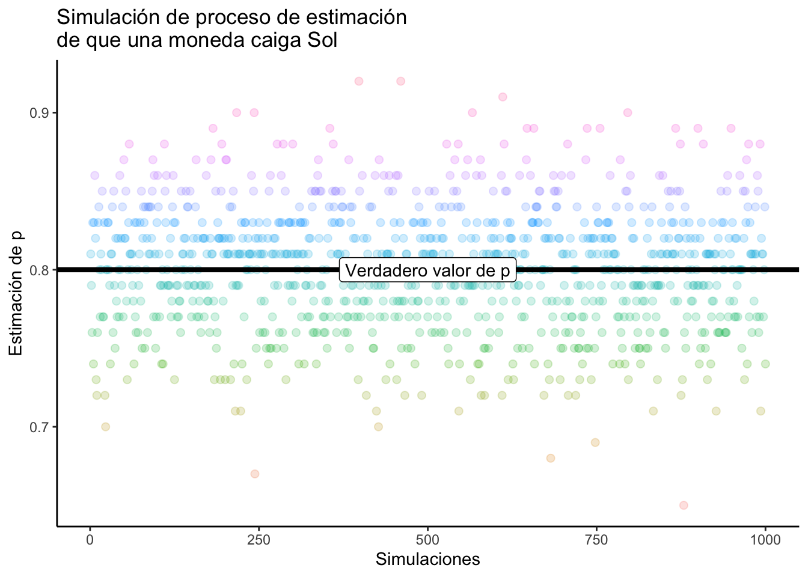

Capítulo 2 Ajuste funcional
2.1 Introducción
Hacemos una apuesta por teléfono. Yo voy a tirar una moneda \(10\) veces y si salen más Soles que Águilas yo gano 50 pesos. Si salen más Águilas que Soles tú ganas la misma cantidad. Al realizar el ejercicio yo te comunico que salieron en total \(10\) Soles y por tanto me debes el dinero. ¿Sospecharías algo de mí?
Si no hablamos de probabilidad no hay forma en la que se pueda justificar que aparentemente hay algo raro con la moneda. Claro, siempre puede ser un caso improbable (hay gente que lo ha hecho) pero es raro que me hayan salido tantos Soles. Para cuantificar qué tan raro es el evento podemos suponer que las monedas siguen un modelo Binomial con parámetro \(p = 1/2\) y en este caso \(n = 10\) (fueron 10 tiros). La probabilidad de que haya obtenido \(10\) soles bajo este modelo es de:
## [1] 0.0009765625¡Rarísimo! Este resultado te haría sospechar que quizá mi moneda no es justa y no se obtienen la misma cantidad de Águilas que Soles cuando la tiro. Esto porque, aparentemente, en mi moneda la probabilidad de Sol debería de ser \(p = 1\) (por tu triste experiencia). Si por ejemplo en el onceavo tiro saliera un Águila, concluirías que, en mi moneda, aparentemente, la probabilidad de Sol es \(p = \frac{10}{11}\). Por supuesto, entre más tiros y más información obtienes, mejor podrás caracterizar la moneda y con mayor sustento tendrás sospechas (o no) de que mi moneda es tramposa.
Formalmente, en el ejemplo anterior, lo que se hace es suponer que existe una variable aleatoria \(X \in\{ \text{Águila}, \text{Sol}\}\) (el resultado de la moneda) de la cual observamos \(n = 11\) realizaciones codificadas en el siguiente vector:
\[ \vec{x} = \big( \text{Sol}, \text{Sol},\text{Sol},\text{Sol},\text{Sol},\text{Sol},\text{Sol},\text{Sol},\text{Sol},\text{Sol},\text{Águila}\big)^T \]
Aproximamos entonces la probabilidad \(\mathbb{P}(X = \text{Sol})\) mediante:
\[ \mathbb{P}(X = \text{Sol}) \approx \dfrac{1}{n}\sum\limits_{i=1}^n \mathbb{I}_{\{\text{Sol}\}}(x_i) = \dfrac{10}{11} \]
Mientras que la de Águila se aproxima mediante:
\[ \mathbb{P}(X = \text{Águila}) \approx \dfrac{1}{n}\sum\limits_{i=1}^n \mathbb{I}_{\{\text{Águila}\}}(x_i) = \dfrac{1}{11} \]
Para ver que éstas son buenas aproximaciones, podemos considerar un vector aleatorio de los posibles datos observados: \[ \vec{X} = (X_1, X_2, \dots, X_{11})^T \] Donde \(X_1\) es una variable aleatoria que representa lo que pudo haber salido en el primer tiro, \(X_2\) es una v.a. que representa lo que pudo haber salido en el segundo tiro y en general \(X_k\) es una v.a. que representa lo que pudo haber salido en el \(k\)-ésimo tiro.
Suponiendo que la moneda tiene una probabilidad \(p\) de arrojar Sol y \(1-p\) de arrojar Águila, notamos que las variables indicadoras evaluadas en las \(X_i\) (aleatorias) son variables aleatorias
\[
\mathbb{I}_{\{\text{Sol}\}}(X_i) \sim \text{Beroulli}(p)
\]
y que por tanto
\[
\hat{p} = \dfrac{1}{n}\sum\limits_{i=1}^n \mathbb{I}_{\{\text{Sol}\}}(X_i)
\]
es una variable aleatoria (al ser suma de variables aleatorias). Podemos entonces calcular su valor esperado:
\[
\mathbb{E}\big[\hat{p}\big] = \mathbb{E}\bigg[\dfrac{1}{n}\sum\limits_{i=1}^n \mathbb{I}_{\{\text{Sol}\}}(X_i)\bigg] = \dfrac{1}{n}\sum\limits_{i=1}^n \mathbb{E}\big[ \mathbb{I}_{\{\text{Sol}\}}(X_i)\big] = \dfrac{1}{n}\sum\limits_{i=1}^n p = \dfrac{1}{n}\cdot np = p
\]
Es decir, que en promedio el estimador \(\hat{p}\) va a atinarle al verdadero valor \(p\). Esto lo podemos ver si hacemos nsim\(= 1000\) simulaciones de \(100\) tiros de una moneda con probabilidad p\(= 8/10\) de sol.
nsim <- 1000
tiros <- 100
p.val <- 8/10
#Creamos un vector para guardar los valores de p gorro
p.gorro <- rep(NA, nsim)
#Loop recorriendo cada una de las nsim simulaciones
for (i in 1:nsim){
experimento <- sample(c("Sol","Águila"), tiros, replace = TRUE,
prob = c(p.val, 1 - p.val))
soles <- table(experimento)["Sol"]
p.gorro[i] <- soles/tiros
}Podemos ver que en promedio le atinamos al valor verdadero:
## [1] 0.80131Lo mismo podemos verlo gráficamente:
#Graficamos
ggplot() +
geom_point(aes(x = 1:nsim, y = p.gorro, color = as.character(p.gorro)),
size = 2, alpha = 0.2) +
geom_hline(aes(yintercept = p.val), size = 1.5, linetype = "solid") +
theme_classic() +
theme(legend.position = "none") +
labs(
x = "Simulaciones",
y = "Estimación de p",
title = "Simulación de proceso de estimación\nde que una moneda caiga Sol"
) +
geom_label(aes(x = nsim/2, y = p.val), label = "Verdadero valor de p")
¿Qué significa esto? El que en promedio \(\hat{p}\) sea \(p\) (formalmente, que \(\mathbb{E}\big[\hat{p}\big] = p\)) significa que, si yo hago muchísimos experimentos (o procesos de muestreo) de la misma cosa, mi \(\hat{p}\) es un buen estimador porque en promedio le va a atinar. Empero, esto no dice nada de qué tan bueno es mi estimador \(\hat{p}\) para mi caso (mi muestra o mi experimento) específico. Puedes pensarlo con los exámenes: que alguien tenga un promedio de 8 dice que en general le ha ido bien en los exámenes, pero no dice nada respecto al primer examen de cálculo que hizo (donde pudo tener \(10\) ó \(5\) para llegar a ese promedio de \(8\) pero no podemos saber de manera específica cuánto fue ). Esto es igual: en promedio el estimador \(\hat{p}\) será \(p\) pero para un análisis específico no sabemos.
OJO Los datos observados no son variables aleatorias: esos ya son fijos, ya los viste. Los posibles datos observados sí son variables aleatorias ya que ellos, consisten en las variables que se pudieron haber observado y te permiten calcular las probabilidades de tus datos observados bajo algún modelo. En el caso de la moneda, los datos observados son \(\vec{x} = \big( \text{Sol}, \text{Sol},\text{Sol},\text{Sol},\text{Sol},\text{Sol},\text{Sol},\text{Sol},\text{Sol},\text{Sol},\text{Águila}\big)^T\) pero los que se pudieron haber observado son todas las \(\binom{n}{2}\) formas en las que la moneda pudo haber salido.
1. Estimación de una función de masa de probabilidad Formalmente, para una variable aleatoria discreta \(X\) que puede tomar los valores \(\{ a_1, a_2, \dots, a_{\ell} \}\) de la cual se observaron \(n\) realizaciones descritas mediante \(\vec{x} = (x_1, x_2, \dots, x_n)^T\) (observados, fijos, constantes). Definimos la función de masa de probabilidad empírica como: \[ \hat{p}(x) = \begin{cases} \\ \frac{1}{n} \sum_{i=1}^{n} \mathbb{I}_{\{a_1\}}(x_i) & \text{ si } x = a_1 \\ \\ \frac{1}{n} \sum_{i=1}^{n} \mathbb{I}_{\{a_2\}}(x_i) & \text{ si } x = a_2 \\ \\ \vdots \\ \\ \frac{1}{n} \sum_{i=1}^{n} \mathbb{I}_{\{a_{\ell}\}}(x_i) & \text{ si } x = a_{\ell} \\ 0 & \text{ en otro caso} \end{cases} \]
donde se supone que \(\mathbb{P}(X = x) \approx \hat{p}(x)\). Notamos que lo anterior puede resumirse en: \[ \hat{p}(x) = \frac{1}{n} \sum_{i=1}^{n} \mathbb{I}_{\{ x\}}(x_i) \]
Análogamente, nota que para un conjunto (medible) \(A\), la aproximación para \(\mathbb{P}(X \in A)\) está dada por:
\[ \hat{p}(A) = \dfrac{1}{n}\sum\limits_{i=1}^{n} \mathbb{I}_A (x_i). \]
Podemos graficar para la base de datos conteo_delitos la probabilidad de que, dado que se cometió un delito, éste haya ocurrido en el dia \(d_i\) de diciembre. Para ello usamos un geom_col:
ggplot(conteo_delitos) +
geom_col(aes(x = fecha, y = n/sum(n), fill = n)) +
scale_fill_gradient("Delito", low = "orange", high = "red") +
theme_bw() +
theme(legend.position = "none") +
labs(
y = "p(x)",
x = "x",
title = "Aproximación a p(x)"
)
Una propiedad interesante de la función de masa de probabilidad es que, en promedio, le atina al verdadero valor (lo que comentábamos antes de que \(\hat{p} = p\)). Es decir, suponiendo que \(X\) tiene una función de masa dada por:
\[ p(x) = \begin{cases} p_1 & \text{ si } x = a_1 \\ p_2 & \text{ si } x = a_2 \\ \vdots \\ p_{\ell} & \text{ si } x = a_{\ell} \\ \end{cases} \]
y suponiendo un vector de muestras posibles \(\vec{X} = (X_1, X_2, \dots, X_n)^T\) notamos que \[ \mathbb{I}_{\{ a_j \}}(X_i) \sim \text{Bernoulli} (p_j) \]
Luego para cualquier \(x\) se tiene que:
\[ \mathbb{E}\big[ \hat{p}(x)\big] = \mathbb{E}\bigg[ \dfrac{1}{n}\sum\limits_{i=1}^{n} \mathbb{I}_{\{ x \}}(X_i) \bigg] = \dfrac{1}{n}\sum\limits_{i=1}^{n}\mathbb{E}\big[ \mathbb{I}_{\{ x \}}(X_i) \big] = \frac{1}{n} n \cdot p_j = p_j. \]
2. Función de distribución empírica
Recuerda que para cualquier variable aleatoria \(X:\mathbb{R}\to\mathbb{R}\) existe su función de distribución \(F_X\) dada por: \[ F_X(x) = \mathbb{P}(X \leq x) \] La idea de la función de distribución empírica es reconstruir (a partir de los datos observados) a \(F_X\). Para ello, notamos que queremos estimar \[ \mathbb{P}(X \leq x) \qquad \forall x\in\mathbb{R} \] esto es equivalente a estimar: \[ \mathbb{P}\big(X \in (-\infty, x] \big) \] y podemos aplicar la aproximación que usamos arriba para un conjunto \(A\): \[ \mathbb{P}\big(X \in (-\infty, x] \big) \approx \sum\limits_{i=1}^n \mathbb{I}_{(-\infty, x]}(x_i) \]
La función de distribución empírica está definida para un vector numérico \(\vec{x} = (x_1, x_2, \dots, x_n)^T\) por: \[ \hat{F} (x) = \frac{1}{n} \sum\limits_{i=1}^{n} \mathbb{I}_{(-\infty, x]}(x_i) \]
La función de distribución empírica es una función de distribución pues cumple las siguientes propiedades (demuéstralo):
\(\lim_{x \to -\infty} \hat{F}(x) = 0\)
\(\lim_{x \to \infty} \hat{F}(x) = 1\)
Si \(x < y\) entonces \(\hat{F}(x) \leq \hat{F}(y)\) (no decreciente)
\(\hat{F}\) es continua por la derecha con límites por la izquierda (càdlàg).
Para demostrar 4. basta con demostrar que para \(x_i\) fija, la función \(i(x) = \mathbb{I}_{(-\infty, x]}(x_i)\) es continua por la derecha con límites por la izquierda pues \(\hat{F}(x)\) es una suma de dichas funciones.
En particular, podemos notar que la función de distribución empírica \(\hat{F} (x)\) le atina a la función de distribución; es decir:
\[ \mathbb{E}\big[\hat{F} (x) \big] = F(x) \]
Para ello consideramos un vector de valores posibles \(\vec{X} = (X_1, X_2, \dots, X_n)^T\) donde las \(X_i\) tienen la misma distribución que \(X\). Y notamos que: \[ \mathbb{I}_{(-\infty, x]}(X_i) \sim \textrm{Bernoulli}\big(F(x)\big) \] pues \(\mathbb{I}_{(-\infty, x]}(X_i) = 1\) si \(X_i \leq x\) y \(\mathbb{I}_{(-\infty, x]}(X_i) = 0\) si \(X_i > x\). Luego: \[ \mathbb{P}\Big( \mathbb{I}_{(-\infty, x]}(X_i) = 1 \Big) = \mathbb{P}(X_i \leq x) = \mathbb{P}(X\leq x) = F(x) \]
donde la igualdad del medio se sigue de que \(X_i\) y \(X\) tienen la misma distribución. Entonces: \[ \mathbb{E}\big[ \hat{F}(x) \big] = \mathbb{E}\Big[ \dfrac{1}{n} \sum\limits_{i=1}^{n} \mathbb{I}_{(-\infty, x]}(X_i) \Big] = \dfrac{1}{n}\sum\limits_{i=1}^{n} \mathbb{E}\big[ \mathbb{I}_{(-\infty, x]}(X_i)\big] = \dfrac{1}{n} n \cdot F(x) = F(x) \]
En R podemos calcular la función de distribución empírica con el comando ecdf el cual cuenta la cantidad de observaciones y regresa una función. Así, para la base de datos conteo_delitos podemos calcular la función de distribución empírica ecdf asociada a la cantidad de delitos que se cometen en un día mediante:
De esta forma podemos calcular la probabilidad de que en un día se cometan menos de 500 delitos:
## [1] 0.09677419O bien podemos graficar la función:
x <- seq(300, 1000, length.out = 100)
y <- Fgorro(x)
ggplot() +
geom_step(aes(x = x, y = y), color = "red") +
labs(
x = "Número de carpetas de investigación (x)",
y = "Probabilidad de que en un día\nse abran menos de x carpetas",
title = "Distribución acumulada de carpetas de investigación en CDMX"
) +
theme_minimal()
Mediante simulaciones, podemos observar que \(\hat{F}\) realmente le atina a \(F\) como sigue:
#Cantidad de simulaciones
nsim <- 100
#Tamaño de la muestra en cada simulacion
n_muestra <- 100
#Valores a evaluar la función
x <- seq(-5, 5, length.out = 200)
#Base de datos para guardar resultados de simulaciones
F_simulado <- data.frame(matrix(NA, ncol = nsim, nrow = length(x)))
for (i in 1:nsim){
valores_simulados <- rnorm(n_muestra)
F_empirica <- ecdf(valores_simulados)
F_simulado[,i] <- F_empirica(x)
}
F_simulado$Valor_x <- x
#Cambiamos el formato de la base para graficar
F_simulado <- F_simulado %>% pivot_longer(cols = -Valor_x)
ggplot(F_simulado) +
geom_step(aes(x = Valor_x, y = value, color = name), alpha = 0.1) +
geom_line(aes(x = Valor_x, y = pnorm(Valor_x)), color = "black") +
theme_classic() +
theme(legend.position = "none") +
labs(
x = "x",
y = "F(x)",
title = "Simulaciones de funciones de distribuciones acumuladas empíricas",
subtitle = "Para X ~ Normal(0,1)"
)
2. Histograma Para una variable aleatoria continua, la aproximación \(\hat{p}\) que hicimos no funciona (la masa siempre es \(0\)). Por lo que es necesario analizar alternativas para estudiar la densidad si suponemos que los datos pueden modelarse mediante algo continuo. Para construir un histograma consideremos \(\vec{x} = (x_1, x_2, \dots, x_n)^T\) y una constante \(h > 0\) llamada el ancho de banda (binwidth). Sea \(\{ I_j \}\) una colección de intervalos no vacíos de \(\mathbb{R}\) tal que \(\cup_{j=1} I_j = \mathbb{R}\) e \(I_j \cap I_k = \emptyset\) (i.e. los \(\{ I_j \}\) forman una partición de \(\mathbb{R}\)). Supongamos, además, los \(I_j\) son de la forma: \[ I_j = \Big[\kappa + (j-1) h, \kappa + jh \Big) \] para algún \(\kappa \in \mathbb{R}\) fijo. Sea \[ n_j(\vec{x}) = \sum\limits_{i=1}^n \mathbb{I}_{I_j}(x_i) \] la cantidad de \(x_i\) en el intervalo \(I_j\).
Un histograma es la gráfica de la función: \[ \text{hist}_{\vec{x}}(x) = \frac{1}{n \cdot h} \sum\limits_{j} n_j(\vec{x}) \cdot \mathbb{I}_{I_j}(x) \]
Una propiedad interesante de un histograma es que éste aproxima correctamente las probabilidades \(\mathbb{P}(X \in I_j)\). Para ver esto, consideramos un vector de valores posibles \(\vec{X} = (X_1, X_2, \dots, X_n)^T\) y que \(x\in I_j\), luego:
\[ \mathbb{E}\Big[ \int_{I_j} \text{hist}_{\vec{X}}(x) dx \Big] = \mathbb{E}\bigg[ \frac{1}{n \cdot h} \sum\limits_{j} n_j(\vec{X}) \cdot \int_{I_j} \mathbb{I}_{I_j}(x) dx \bigg] = \frac{1}{n \cdot h} \sum\limits_{j} \mathbb{E}\big[ n_j(\vec{X}) \big] \cdot h = \dfrac{1}{n}\sum\limits_{j} \mathbb{E}\big[ n_j(\vec{X}) \big] \] donde las \(n_j(\vec{X})\) son variables aleatorias en este caso y: \[ \mathbb{E}\big[ n_j(\vec{X})\big] = \sum\limits_{i=1}^n \mathbb{E}\big[\mathbb{I}_{I_j}(X_i)\big] = \sum\limits_{i=1}^n\mathbb{P}(X_i \in I_j) = n \mathbb{P}(X \in I_j) \] donde la última igualdad se da pues las \(X_i\) tienen la misma distribución que \(X\). Luego: \[ \mathbb{E}\Big[ \int_{I_j} \text{hist}_{\vec{X}}(x) dx \Big] = \mathbb{P}(X \in I_j) \] Es decir, el valor esperado del área bajo un histograma en un intervalo \(I_j\) coincide con la probabilidad de que \(X\) pertenezca a dicho intervalo.
Gráficamente:

En R podemos hacer un histograma a través de geom_histogram. En este caso lo haremos de la latitud:
#En este caso binwidth = h y kappa = boundary
ggplot(datos) +
geom_histogram(aes(x = latitud, y = ..density..),
binwidth = 0.02, boundary = -99,
color = "white", fill = "purple") +
theme_light() 
2.1.1 Ejercicio
Considera la siguiente base de datos:
mis.datos <- data.frame(
A = c(3.15, 5.46, 3.28, 4.20, 1.98, 2.28, 3.12, 4.10, 3.42, 3.91,
2.06, 5.53, 5.19, 2.39, 1.88, 3.43, 5.51, 2.54, 3.64, 4.33,
4.85, 5.56, 1.89, 4.84, 5.74, 3.22, 5.52, 1.84, 4.31, 2.01,
4.01, 5.31, 2.56, 5.11, 2.58, 4.43, 4.96, 1.90, 5.60, 1.92),
B = c(2.90, 5.21, 3.03, 3.95, 1.73, 2.03, 2.87, 3.85, 3.17, 3.66,
1.81, 5.28, 4.94, 2.14, 1.63, 3.18, 5.26, 2.29, 3.39, 4.08,
4.60, 5.31, 1.64, 4.59, 5.49, 2.97, 5.27, 1.59, 4.06, 1.76,
3.76, 5.06, 2.31, 4.86, 2.33, 4.18, 4.71, 1.65, 5.35, 1.67),
C = c(2.65, 4.96, 2.78, 3.70, 1.48, 1.78, 2.62, 3.60, 2.92, 3.41,
1.56, 5.03, 4.69, 1.89, 1.38, 2.93, 5.01, 2.04, 3.14, 3.83,
4.35, 5.06, 1.39, 4.34, 5.24, 2.72, 5.02, 1.34, 3.81, 1.51,
3.51, 4.81, 2.06, 4.61, 2.08, 3.93, 4.46, 1.4, 5.1, 1.42),
D = c(2.40, 4.71, 2.53, 3.45, 1.23, 1.53, 2.37, 3.35, 2.67, 3.16,
1.31, 4.78, 4.44, 1.64, 1.13, 2.68, 4.76, 1.79, 2.89, 3.58,
4.10, 4.81, 1.14, 4.09, 4.99, 2.47, 4.77, 1.09, 3.56, 1.26,
3.26, 4.56, 1.81, 4.36, 1.83, 3.68, 4.21, 1.15, 4.85, 1.17)
)Grafica un histograma de las variables A, B, C y D de dicha base con un ancho de banda (binwidth) igual a 1.
¿Podemos concluir la forma de la distribución a partir del histograma? Es decir ¿hay distribuciones sesgadas a la izquierda, a la derecha, uniformes, centradas o con colas pesadas?
Realiza el mismo histograma pero ahora con un ancho de banda de 0.25 ¿por qué hubo cambios?
Analiza la base de datos (los valores en función de la columna A) y concluye.
3. Densidad kernel
Un histograma tiene muchos bemoles: en particular, es necesario decidir quién es \(h\) y quién \(\kappa\) y no hay una regla clara de cómo hacerlo. La densidad kernel es un intento de mejorar esta situación. Para ello recordamos que si \(X\) es una variable aleatoria continua con densidad \(F\) entonces:
\[
f(x) = F'(x) = \lim_{h \to 0} \dfrac{F(x + h) - F(x - h)}{2h}
\]
Por lo que para un \(h\) positiva con \(h \approx 0\) tenemos que:
\[
f(x) \approx \dfrac{F(x + h) - F(x - h)}{2h}
\]
En el caso de un vector de observaciones \(\vec{x} = (x_1, x_2, \dots, x_n)^T\) recordamos que podemos asociar una función de distribución empírica \(\hat{F}\) y por tanto obtener el estimador de Rosenblatt de la densidad \(f\) mediante:
\[
\hat{f}(x) = \dfrac{\hat{F}(x + h) -\hat{F}(x - h)}{2h}
\]
Podemos reescribir esto como:
\[
\hat{f}(x) = \dfrac{1}{2nh} \sum\limits_{i = 1}^n \mathbb{I}_{(x-h, x+h]}(x_i) = \dfrac{1}{nh}\sum\limits_{i = 1}^n K\Big( \frac{x_i - x}{h}\Big)
\]
donde:
\[
K(u) = \frac{1}{2} \mathbb{I}_{(-1, 1]}(u)
\]
se conoce como el kernel rectangular. Una vez que llegamos hasta este punto notamos que para cualquier \(K\) que cumple:
\(\int\limits_{-\infty}^{\infty} K(u) du = 1\)
\(K(u) \geq 0\)
la función \(\hat{f}\) es una función de densidad. La función \(\hat{f}\) se conoce como el estimador de densidad del kernel K. Algunos ejemplos de kernels \(K\) son:
Rectangular: \(K(u) = \frac{1}{2} \mathbb{I}_{(-1, 1]}(u)\)
Triangular: \(K(u) = (1 - |u|) \mathbb{I}_{(-1, 1]}(u)\)
Epanechnikov: \(K(u) = \frac{3}{4}(1 - u^2) \mathbb{I}_{(-1, 1]}(u)\)
Gaussiano: \(K(u) = \frac{1}{\sqrt{2\pi}}\text{exp}(-u^2/2)\)
OJO No confundir el Kernel \(K\) (que es una función que integra a \(1\)) con función de densidad kernel que es una función de los datos que utiliza un kernel y es una densidad por sí misma.
En R podemos calcular la densidad kernel en n puntos con relativa facilidad mediante density:
Nota que R en automático preselecciona los valores de h mediante un criterio preprogramado de optimización. Podemos ver dicha densidad gráficamente (y compararla con un histograma):
ggplot(datos) +
geom_histogram(aes(x = latitud, y = ..density..),
binwidth = 0.01, boundary = 19,
fill = "purple", color = "white") +
geom_density(aes(x = latitud), kernel = "gaussian", size = 1.5) +
theme_bw()
Esto no se queda ahí, podemos generalizar el concepto de kernel a dos dimensiones para aproximar una función de densidad \(f(x,y)\) de dos variables aleatorias sí tenemos dos vectores \(\vec{x}\) y \(\vec{y}\) y calculamos:
\[ \hat{f}(x,y) =\dfrac{1}{nh^2} \sum\limits_{i = 1}^n K \Big( \frac{x_i - x}{h}\Big) K \Big( \frac{y_i - y}{h}\Big) \]
En particular esto nos permite generar una densidad en R para saber en qué coordenadas de latitud y longitud ocurren más los delitos:
ggplot(datos) +
geom_point(aes(x = longitud, y = latitud), alpha = 0.025) +
geom_density_2d_filled(aes(x = longitud, y = latitud), alpha = 0.75) +
geom_density2d(aes(x = longitud, y = latitud)) +
theme_void()
2.1.2 Ejercicio sugerido
Este ejercicio es para que tengas la seguridad de que comprendiste los conceptos previos y sabes calcularlos. Es tedioso pero bueno para aclarar dudas.
Considera la siguiente base de datos:| x | y | z | w |
|---|---|---|---|
| 1 | -100 | Rojo | Bueno |
| 2 | -2 | Azul | Malo |
| 3 | 2 | Azul | Regular |
| 2 | 3 | Rojo | Bueno |
| 1 | 1 | Verde | Bueno |
| 3 | 4 | Amarillo | Malo |
Calcula a mano (es decir puedes usar calculadora pero no lo calcules en R) y luego verifica tus cálculos haciéndolo en R:
El total de \(\vec{x}\)
La media y varianza de \(\vec{y}\)
La curtosis y la asimetría de \(\vec{x}\) (su media es 2 y su varianza 0.8). Determina si tiene un sesgo a la derecha, a la izquierda o ninguno.
Determina mediante la curtosis si \(\vec{x}\) tiene colas más pesadas que \(\vec{y}\).
Calcula el cuantil \(0.25\) y el \(0.75\) de \(\vec{y}\) así como su rango intercuartílico (IQR).
¿Hay valores atípicos (outliers) en \(\vec{y}\)? En caso afirmativo, determina cuáles son.
¿Cuál es el rango de \(\vec{y}\)? (no confundir con el IQR).
Determina la moda de \(\vec{z}\)
Determina la mediana de \(\vec{x}\).
Determina la MAD de \(\vec{x}\)
Realiza el conteo de cuáles \(\vec{z}\) pertenecen al conjunto \(A = \{ \text{Rojo}, \text{Amarillo} \}\)
Realiza una tabla de contingencia de \(\vec{w}\) y \(\vec{z}\).
Determina la distribución frecuencial (observada) marginal de \(\vec{w}\).
Realiza una tabla de frecuencias de \(\vec{w}\) y \(\vec{z}\).
Calcula el riesgo relativo de estar en un choque dado que manejas en CDMX a partir de los datos en la tabla :
Interpreta tu resultado.
De la tabla anterior calcula la razón de momios asociada a chocar dado que manejas en CDMX. Interprétala.
Calcula la correlación de Bravais Pearson de \(\vec{x}\) y \(\vec{y}\). Interpreta.
Obtén la correlación de Spearman de \(\vec{x}\) y \(\vec{y}\)
Para \(\vec{w}\) y \(\vec{x}\) obtén la \(\tau\) de Kendall (son 15 comparaciones para generarla)
Descartando el outlier de \(\vec{y}\) (y su \(\vec{x}\) asociada), ajusta un modelo lineal \(\hat{y} = \hat{\beta}_1 x + \hat{\beta}_0\) y grafícalo para ver qué tan buen modelo es.
Realiza una gráfica de caja (boxplot) para \(\vec{y}\)
Realiza un scatterplot para la submatriz \(Z_{(x,y)}\).
Realiza una gráfica de líneas para \(Z_{(x,y)}\) identificando la función de interpolación lineal \(f(x)\) asociada.
Realiza una gráfica de barras de \(\vec{w}\) especificando quiénes son los \(a_i\) y los \(n_j\).
Estima mediante \(\hat{p}\) la función de probabilidad de \(\vec{w}\).
Identifica la función de distribución empírica para \(\vec{x}\), \(\hat{F}\) y grafícala.
Realiza un histograma con \(h = 2\) para \(x\). Toma \(\kappa = 4\).
Ajusta una densidad kernel a \(\vec{x}\) con \(h = 1\) y usando un kernel \(K\) triangular. Calcula \(\hat{f}(x)\) para \(x = 0,1,2,3,4\).